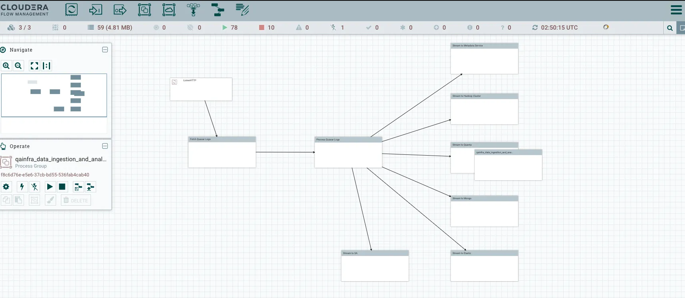
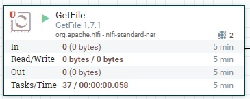
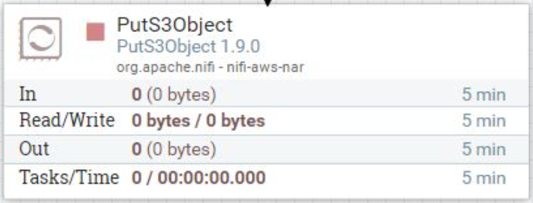

JupyterLab and Apache Nifi Configuration
Introduction to Jupterlab
JupyterLab is a web-based user interface for working with Jupyter notebooks, code, data, and other documents. It allows you to create, edit, run, and share your notebooks, as well as explore and visualize your data in various ways. JupyterLab is designed to be flexible, integrated, and extensible, with a modular architecture that supports extensions and custom components.

Setting up Jupyter lab on EC2 machine
- Let's review first. After creating the ec2 machine, you need to do following in order (this decription is for Amazon Linux.
For other OS, you can look at the official aws ec2 machine):
- Update the ec2 machine
sudo yum update -y
- Install docker
sudo yum install docker
- Transfer the docker-compose.yml file to ec2 instance (for more details see Docker configuration page).
scp -i [your-key.pem] docker-compose.yml ec2-user@[your-ec2-instance-ip]:/path/to/destination
- Create a docker container and docker user:
sudo gpasswd -a $USER docker
newgrp docker
- Next start the docker:
sudo systemctl start docker
- Once you have setup the Jupyterlab on the ec2 machine, you just need to run `docker-compose up -d` so as to start the Jupyter lab kernal
(The `-d` flag runs the containers in detached mode, allowing them to run in the background).
docker-compose up -d
- Install python:
sudo yum install python-pip
- Once the Docker Compose services are up and running, you can access JupyterLab in your web browser. By default, JupyterLab is often available at port 8888.
- Open a web browser and navigate to:
- Update the ec2 machine
- Install docker
- Transfer the docker-compose.yml file to ec2 instance (for more details see Docker configuration page).
- Create a docker container and docker user:
- Next start the docker:
- Once you have setup the Jupyterlab on the ec2 machine, you just need to run `docker-compose up -d` so as to start the Jupyter lab kernal (The `-d` flag runs the containers in detached mode, allowing them to run in the background).
- Install python:
sudo yum update -ysudo yum install dockerscp -i [your-key.pem] docker-compose.yml ec2-user@[your-ec2-instance-ip]:/path/to/destinationsudo gpasswd -a $USER dockernewgrp dockersudo systemctl start dockerdocker-compose up -dsudo yum install python-pipWhen you access JupyterLab for the first time, it maybe asked to provide an authentication token or password. You can find this token in the logs or terminal output when you ran docker-compose up `-d`. Look for a line that starts with "token=" and contains a long string of characters. Copy and paste this token when prompted in your web browser.
# Install Faker library
pip install faker
and generate the data of list of customers (customer_id, First name, Last name, email, street, city, state, country) using the folowing code:
from faker import Faker
import csv
import random
from decimal import Decimal
from datetime import datetime
RECORD_COUNT = 10000
fake = Faker()
current_time = datetime.now().strftime("%Y%m%d%H%M%S")
print(current_time)
def create_csv_file():
with open(f'FakeDataset/customer_{current_time}.csv', 'w', newline='') as csvfile:
fieldnames = ["customer_id","first_name","last_name","email","street",
"city","state","country"
]
writer = csv.DictWriter(csvfile, fieldnames=fieldnames)
writer.writeheader()
for i in range(RECORD_COUNT):
#print(i)
writer.writerow(
{
"customer_id": i,#fake.random_int(min=1, max=10000),
'first_name': fake.first_name(),
'last_name': fake.last_name(),
'email': fake.email(),
'street': fake.street_address(),
'city': fake.city(),
'state': fake.state(),
'country': fake.country()
}
)
if __name__ == '__main__':
create_csv_file()
Introduction to Apache Nifi
Apache NiFi is an open-source data integration tool that provides an intuitive and powerful way to automate the flow of data between systems. It was developed by the Apache Software Foundation and is designed to solve the challenges of data routing, transformation, and system connectivity in a scalable and extensible manner. NiFi's primary goal is to enable the automation of data flow, making it an essential tool for data ingestion, transformation, and routing in various scenarios.
Apache NiFi is a real time data ingestion platform, which can transfer and manage data transfer between different sources and destination systems. For configuration, you can look at Apache Nifi Tutorials,
- Apache NiFi- General Features:
- Apache NiFi provides a web-based user interface, which provides seamless experience between design, control, feedback, and monitoring.
- It is highly configurable. This helps users with guaranteed delivery, low latency, high throughput, dynamic prioritization, back pressure and modify flows on runtime.
- It also provides data provenance module to track and monitor data from the start to the end of the flow.
- Developers can create their own custom processors and reporting tasks according to their needs.
- NiFi also provides support to secure protocols like SSL, HTTPS, SSH and other encryptions.
- It also supports user and role management and also can be configured with LDAP for authorization.
- Apache NiFi -Key Concepts:
- Process Group − It is a group of NiFi flows, which helps a user to manage and keep flows in hierarchical manner.
- Flow − It is created connecting different processors to transfer and modify data if required from one data source or sources to another destination data sources.
- Processor − A processor is a java module responsible for either fetching data from sourcing system or storing it in destination system. Other processors are also used to add attributes or change content in flowfile.
- Flowfile − It is the basic usage of NiFi, which represents the single object of the data picked from source system in NiFi. NiFiprocessormakes changes to flowfile while it moves from the source processor to the destination. Different events like CREATE, CLONE, RECEIVE, etc. are performed on flowfile by different processors in a flow.
- Event − Events represent the change in flowfile while traversing through a NiFi Flow. These events are tracked in data provenance.
- Data provenance − It is a repository.It also has a UI, which enables users to check the information about a flowfile and helps in troubleshooting if any issues that arise during the processing of a flowfile.
- Apache NiFi Advantages:
- Apache NiFi enables data fetching from remote machines by using SFTP and guarantees data lineage.
- Apache NiFi supports clustering, so it can work on multiple nodes with the same flow processing different data, which increases the performance of data processing.
- It also provides security policies on the user level, process group level, and other modules too.
- Its UI can also run on HTTPS, which makes the interaction of users with NiFi secure.
- NiFi supports around 188 processors, and a user can also create custom plugins to support a wide variety of data systems.
- Apache NiFi Disadvantages:
- When node gets disconnected from NiFi cluster while a user is making any changes in it, then the flow.xml becomes invalid.Anode cannot connect back to the cluster unless admin manually copies flow.xml from the connected node.
- Apache NiFi have state persistence issue in case of primary node switch, which sometimes makes processors not able to fetch data from sourcing systems.
Apache NiFi - Processors Categorization
Various available processors in Apache Nifi are as follows:
| Processor Category | Processor category Explanation | Processor Names |
|---|---|---|
| Data Ingestion Processors | The processors under Data Ingestion category are used to ingest data into the NiFi data flow. These are mainly the starting point of any data flow in Apache NiFi. Some of the processors that belong to these categories are GetFile, GetHTTP, GetFTP, GetKAFKA, etc. | GetFile, GetHTTP, GetFTP, GetKAFKA, etc. |
| Routing and Mediation Processors | Routing and Mediation processors are used to route the flowfiles to different processors or data flows according to the information in attributes or content of those flowfiles. These processors are also responsible to control the NiFi data flows. Some of the processors that belong to this category are RouteOnAttribute, RouteOnContent, ControlRate, RouteText, etc. | RouteOnAttribute, RouteOnContent, ControlRate, RouteText, etc. |
| Database Access Processors | The processors of this Database Access category are capable of selecting or inserting data or executing and preparing other SQL statements from the database. These processors mainly use the data connection pool controller setting of Apache NiFi. Some of the processors that belong to this category are ExecuteSQL, PutSQL, PutDatabaseRecord, ListDatabaseTables, etc. | ExecuteSQL, PutSQL, PutDatabaseRecord, ListDatabaseTables, etc. |
| Attribute Extraction Processors | Attribute Extraction Processors are responsible for extracting, analyzing, and changing flowfile attributes processing in the NiFi data flow. Some of the processors that belong to this category are UpdateAttribute, EvaluateJSONPath, ExtractText, AttributesToJSON, etc. | UpdateAttribute, EvaluateJSONPath, ExtractText, AttributesToJSON, etc. |
| System Interaction Processors | System Interaction processors are used to run processes or commands in any operating system. These processors also run scripts in many languages to interact with a variety of systems. Some of the processors that belong to this category are ExecuteScript, ExecuteProcess, ExecuteGroovyScript, ExecuteStreamCommand, etc. | ExecuteScript, ExecuteProcess, ExecuteGroovyScript, ExecuteStreamCommand, etc. |
| Data Transformation Processors | Processors that belong to Data Transformation are capable of altering the content of the flowfiles. These can be used to fully replace the data of a flowfile, normally used when a user has to send a flowfile as an HTTP body to InvokeHTTP processor. Some of the processors that belong to this category are ReplaceText, JoltTransformJSON, etc. | ReplaceText, JoltTransformJSON, etc. |
| Sending Data Processors | Sending Data Processors are generally the end processors in a data flow. These processors are responsible for storing or sending data to the destination server. After successfully storing or sending the data, these processors DROP the flowfile with the success relationship. Some of the processors that belong to this category are PutEmail, PutKafka, PutSFTP, PutFile, PutFTP, etc. | PutEmail, PutKafka, PutSFTP, PutFile, PutFTP, etc. |
| Splitting and Aggregation Processors | These processors are used to split and merge the content present in a flowfile. Some of the processors that belong to this category are SplitText, SplitJson, SplitXml, MergeContent, SplitContent, etc. | SplitText, SplitJson, SplitXml, MergeContent, SplitContent, etc. |
| HTTP Processors | These processors deal with HTTP and HTTPS calls. Some of the processors that belong to this category are InvokeHTTP, PostHTTP, ListenHTTP, etc. | InvokeHTTP, PostHTTP, ListenHTTP, etc. |
| AWS Processors | AWS processors are responsible for interacting with the Amazon Web Services system. Some of the processors that belong to this category are GetSQS, PutSNS, PutS3Object, FetchS3Object, etc. | GetSQS, PutSNS, PutS3Object, FetchS3Object, etc. |
Setting up Apache nifi on EC2 machine
Using Apache NiFi to Transfer CSV Files to AWS S3- Step 1: Prepare Your EC2 Instance
- Step 2: Create a NiFi Flow::
- Step 3: Configure GetFile Processor
- Specify the input directory where your JupyterLab generated CSV files are located (e.g., "FakeDataset").
- Set a polling schedule to check for new files at regular intervals.
- You have to provide few of these from the table, inside the configuration processor.
- (More information)
- Step 4: Configure PutS3Object Processor
- Set the AWS credentials, including your access key and secret key.
- Specify the S3 bucket name where you want to upload the files.
- Configure the destination directory within the S3 bucket.
- Map the incoming flow file attributes to the S3 object properties.
- (More infromation)
- Step 5: Connect Processors:
- Step 6: Start the Flow
- Step 6: Monitor and Troubleshoot
Ensure that you have Apache NiFi installed and running on your EC2 instance. You can download and set up Apache NiFi by following the official documentation: NiFi Getting Started
1. Start the NiFi UI by navigating to http://your-ec2-instance-ip:2080/nifi.
2. In the NiFi UI, you need to create a data flow that fetches and uploads the CSV files to your S3 bucket.
3. Create a processor group (a container for processors) in NiFi to organize your flow. Drag the 'processor' to the canvas.

You can create as many processors as you need:
Select the "GetFile" processor from the list of available processors and drag it onto your canvas. This processor will retrieve the CSV files from the local directory. Configure it as follows:
| Display Name | API Name | Default Value | Allowable Values | Description |
|---|---|---|---|---|
| Input Directory | Input Directory | The input directory from which to pull files | ||
| File Filter | File Filter | [^\.].* | Only files whose names match the given regular expression will be picked up | |
| Path Filter | Path Filter | When Recurse Subdirectories is true, then only subdirectories whose path matches the given regular expression will be scanned | ||
| Batch Size | Batch Size | 10 | The maximum number of files to pull in each iteration | |
| Keep Source File | Keep Source File | false | True, False | If true, the file is not deleted after it has been copied to the Content Repository; this causes the file to be picked up continually and is useful for testing purposes. If not keeping original NiFi will need write permissions on the directory it is pulling from otherwise it will ignore the file. |
| Recurse Subdirectories | Recurse Subdirectories | true | True, False | Indicates whether or not to pull files from subdirectories |
| Polling Interval | Polling Interval | 0 sec | Indicates how long to wait before performing a directory listing | |
| Ignore Hidden Files | Ignore Hidden Files | true | True, False | Indicates whether or not hidden files should be ignored |
| Minimum File Age | Minimum File Age | 0 sec | The minimum age that a file must be in order to be pulled; any file younger than this amount of time (according to last modification date) will be ignored | |
| Maximum File Age | Maximum File Age | The maximum age that a file must be in order to be pulled; any file older than this amount of time (according to last modification date) will be ignored | ||
| Minimum File Size | Minimum File Size | 0 B | The minimum size that a file must be in order to be pulled | |
| Maximum File Size | Maximum File Size | The maximum size that a file can be in order to be pulled |
Add a "PutS3Object" processor to your flow. This processor will upload the fetched CSV files to your S3 bucket. Configure it as follows:
In the 'Put S3 Object' section of your pipeline configuration, you will need to configure an AWS credentials provider.
| Display Name | API Name | Default Value | Allowable Values | Description |
|---|---|---|---|---|
| Object Key | Object Key | ${filename} | The S3 Object Key to use. This is analogous to a filename for traditional file systems. | |
| Bucket | Bucket | The S3 Bucket to interact with. | ||
| Content Type | Content Type | Sets the Content-Type HTTP header indicating the type of content stored in the associated object. The value of this header is a standard MIME type. AWS S3 Java client will attempt to determine the correct content type if one hasn't been set yet. Users are responsible for ensuring a suitable content type is set when uploading streams. If no content type is provided and cannot be determined by the filename, the default content type "application/octet-stream" will be used. Supports Expression Language: true (will be evaluated using flow file attributes and variable registry) | ||
| Content Disposition | Content Disposition | inline, attachment | Sets the Content-Disposition HTTP header indicating if the content is intended to be displayed inline or should be downloaded. Possible values are 'inline' or 'attachment'. If this property is not specified, object's content-disposition will be set to filename. When 'attachment' is selected, '; filename=' plus object key are automatically appended to form the final value 'attachment; filename="filename.jpg"' | |
| Cache Control | Cache Control | Sets the Cache-Control HTTP header indicating the caching directives of the associated object. Multiple directives are comma-separated. Supports Expression Language: true (will be evaluated using flow file attributes and variable registry) | ||
| Access Key ID | Access Key | No Description Provided. Sensitive Property: true Supports Expression Language: true (will be evaluated using variable registry only) | ||
| Secret Access Key | Secret Key | No Description Provided. Sensitive Property: true Supports Expression Language: true (will be evaluated using variable registry only) | ||
| Credentials File | Credentials File | Path to a file containing AWS access key and secret key in properties file format. This property requires exactly one file to be provided. | ||
| AWS Credentials Provider Service | AWS Credentials Provider service | Controller Service API: AWSCredentialsProviderService Implementation: AWSCredentialsProviderControllerService | The Controller Service that is used to obtain AWS credentials provider |
Connect the "GetFile" processor to the "PutS3Object" processor using relationships. Ensure that the data flow follows the intended sequence.
Start the processor group to activate the flow. NiFi will begin monitoring the directory for new files and uploading them to the S3 bucket as they arrive.
You can monitor the status of the processors and view logs in the NiFi UI to ensure that the data flow is working correctly. Additionally, inspect the S3 bucket to confirm that the CSV files are being uploaded as expected.
Your Apache NiFi data flow is now set up to ingest CSV files generated in JupyterLab and store them in your AWS S3 bucket as they are created. Make sure to configure and test it properly to suit your specific requirements.